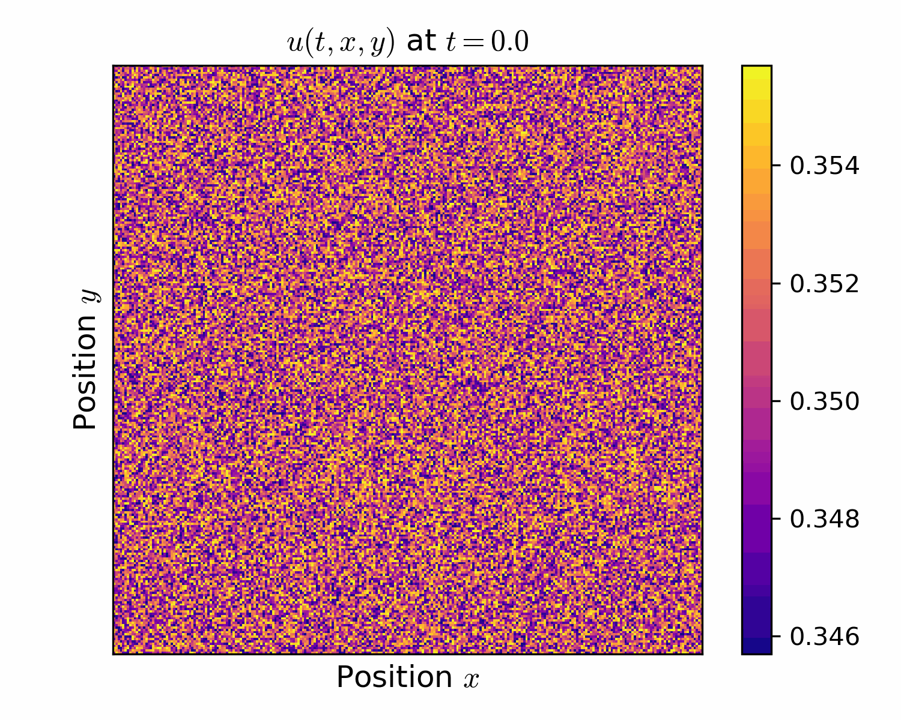

Research
I am currently working with Professor Daniel B. Cooney at the Univeristy of Illinois Urbana-Champaign. I am currently exploring research questions related to Mathematical Biology.
1. Pattern Formation
I am interested in pattern formation in nonlinear PDEs. In many systems, spatial patterns emerge when a homogeneous equilibrium loses stability, allowing small spatial perturbations to grow and develop into organized structures. My research explores pattern formation driven by different mechanisms in a variety of PDE and nonlocal models, with particular emphasis on stability and bifurcation analysis.

2. Well-Posedness and Regularity of PDEs
I am interested in the well-posedness and regularity of nonlinear PDEs arising from mathematical models. Establishing existence, uniqueness, boundedness, and regularity of solutions is often essential for ensuring that a PDE model is mathematically meaningful and dynamically well behaved. My current interests focus primarily on nonlinear parabolic equations and related evolution problems.
3. Numerical Methods and Simulations
I am interested in numerical methods and simulations for dynamical systems and PDEs defined on different spatial structures. These include dynamical systems on graphs, PDEs on regular Euclidean domains, and nonlocal evolution equations on graphons. I am also interested in numerical methods for PDEs posed on smooth manifolds without boundary, particularly in understanding how the underlying geometry and spatial structure influence the dynamics and numerical approximation.
Publications and Preprints
- Yuxuan Zhao, Kaisheng Zhu, Yefei Zhang, and Daniel B. Cooney. Pattern Formation in a Spatial Public Goods Dilemma due to Diffusive or Directed Motion. Bulletin of Mathematical Biology, 88, 173 (2026). [Journal]
Workshops and Presentations
Poster presentation, Evolutionary Games: Mathematical Theory and Biological Insights, National Institute for Theory and Mathematics in Biology (NITMB), Chicago, May 2026.